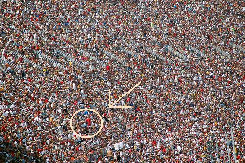

Δεν ξέρω με ποιο διεστραμμένο τρόπο καταφέρατε να βρεθείτε σε αυτήν την ιστοσελίδα! Είχε φτάσει η στιγμή που πίστευα ότι ακόμα και το Google με είχε αποκλείσει από τις αναζητήσεις του αφού από τη στιγμή της δημιουργίας της ιστοσελίδας είχε καταφέρει να χτυπήσει άπειρες φορές limit down με τον εκπληκτικό αριθμο των ακριβώς μηδεν pageviews!
Αφού όμως τα καταφέρατε, μαλλον σας ενδιαφέρει να μάθετε ότι το όνομα μου είναι Γιώργος Παυλάκος, (για τους φίλους Αναξαγόρας) είμαι -γκουχ γκουχ, πετιμέζι έγινε πάλι ο καφες- χρονών και κατοικώ στο Παρίσι (Οι φήμες που μιλάνε για μία συνηθισμένη πολυκατοικία στου Ζωγράφου είναι προφανώς ψευδείς). Είμαι φοιτητής της Σχολής Ηλεκτρολόγων Μηχανικών και Μηχανικών Υπολογιστών της Εcole Polytechnique. Και πάλι αν ακούσατε κάτι για ΕΜΠ, Αθήνα και λοιπά είναι μόνο ψέματα!
Για όσους αναρωτιούνται πως είμαι, ορίστε μια φωτογραφία μου με το καλό μου προφίλ.

Όχι, δεν είμαι αυτός με την κόκκινη μπλούζα.. Ο δίπλα ακριβώς!
| Σεπτέμβριος 480 π.Χ. | Θεμιστοκλής | Ναυμαχία της Σαλαμίνας |
| 25 Μαρτίου 1821 | Παλαιών Πατρών Γερμανός | Λάβαρο της Επανάστασης |
| 21 Μαΐου 2005 | Έλενα Παπαρίζου | Νίκη στη Eurovision |
Μετά από όλα αυτά θέλετε να μάθετε και περισσότερα? Δεν θέλω να σας ανησυχήσω, αλλά something is wrong with you. Τέλος πάντων, αν είναι τόσο δύσκολο να με βρείτε στο κυλικείο, υπάρχει και e-mail: pavgeorge@hotmail.com. Στείλτε με δική σας ευθύνη.
Pageviews : 1 (Και αυτός είσαι εσύ. Ευχαριστώ που μου στέρησες μια θέση στο βιβλιο Guiness στην κατηγορία "Greatest Failure: Website")